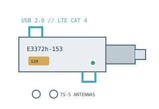

[ MODEL-SPECIFIC NETWORK HARDWARE ]
Huawei E3372h-153 LTE Cat 4 USB Modem
USB-attached LTE mobile broadband stick for a data SIM, regional band-compatible cellular service and a computer or supported router host.

EXACT MODEL / SKU: Huawei E3372h-153 regional hardware variant. E3372h-320, E3372s-153 and carrier-branded devices may differ in bands, software mode, ports or lock status.
Exact specifications and compatibility
| Modem standard | LTE FDD Category 4; backward cellular support includes UMTS/HSPA+ and GSM/EDGE in the specified regional band plan. |
|---|---|
| Interfaces | USB 2.0 Type-A host/data/power; micro-SIM slot; two TS-5 external antenna sockets on the documented E3372 configuration; microSD function depends on model revision. |
| Downstream / upstream | Huawei specifies LTE Cat 4 up to 150Mb/s down and 50Mb/s up at 20MHz bandwidth. Supported HSPA+ peak is up to 42Mb/s down / 5.76Mb/s up; operator, signal and cellular band determine actual rates. |
| Telephone service | Cellular data stick, not a telephone/voice modem; it provides no handset audio, analog phone jack or guaranteed SMS service. |
| Provider compatibility | E3372h-153 documentation lists LTE FDD 800/900/1800/2100/2600MHz, UMTS 900/2100MHz and GSM 850/900/1800/1900MHz. Confirm local carrier bands, SIM size/APN, carrier lock and data-device approval for this exact variant. |
| Firmware / host compatibility | Huawei support provides region-specific software and guides. E3372 retail firmware may operate in HiLink/router-like or stick/serial modes; do not cross-flash firmware between h/s variants or carriers. OS/router host compatibility depends on driver and firmware mode. |
| Power and safety | USB bus-powered at the host's USB supply voltage; no separate DC adapter. Use an undamaged compliant USB port, avoid covering the radio while operating, keep it dry and remove before transporting a computer. |
Model-specific notes
Huawei's E3372 family name alone is insufficient for carrier compatibility: verify the full h-153 suffix, firmware mode, local frequency bands and SIM/network lock before use.
Manufacturer specifications and manual
- Huawei E3372 official specificationsManufacturer specification table for network classes, bands, peak rates and host interface.
- Huawei E3372h-153 official supportManufacturer support/download route for this exact regional variant and its quick-start documentation.
- Huawei E3372h-153 repair and service documentationManufacturer service portal; software, support and applicability may vary by country.